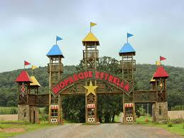
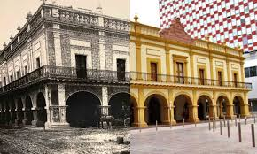

Hola, Bienvenidos A Monterrey
En conjunto a su tradicional vocación industrial y de negocios, Monterrey está empezando a desarrollar una vocación turística ligada a sus
atractivos naturales, a sus parques de diversiones y museos. La ciudad cuenta con una gran variedad de atractivos turísticos, debido a la combinación de
sitios naturales y la modernidad de algunos sectores de la ciudad.
Entre los lugares de mayor atractivo dentro de la ciudad están:
Cerro del Obispado: En este cerro se encuentra el museo del Obispado y un mirador.
Macroplaza: Considerada como la quita plaza más grande del mundo con 400,000 m².

Paseo Santa Lucía: Considerado el río artificial más largo de Latinoamérica con 2.5 km.
Parque Fundidora: Considerado uno de los parques más grandes del continente americano.
BioParque Estrella: Un zoológico en el cual existen safaris, bosque de dinosaurios, espectáculos y mucho más.
 
Grutas de García: A 45 minutos del área metropolitana de Monterrey, allí se encuentran fósiles, cuevas, estalactitas y estalagmitas, y a parte cuenta con un teléferico
Museo de Arte Contemporáneo: Tiene exposiciones de arte moderno internacional, en su interior existen muchas obras de artistas reconocidos europeos, canadienses y de Latinoamérica. En este museo también existen obras en pinturas abstractas, obras tridimensionales, obras con holografías, obras en vivo, entre otros.
Museo del Acero: Ubicado en Fundidora, este horno actualmente es un museo con restaurantes, antes este museo era una empresa de fundición de acero, considerada la más importante de América Latina, en 1903 en Fundidora justo en el horno 3 se crearon los primeros rieles de metal de toda América Latina.
Museo Regional de Historia en el Palacio del Obispado, también conocido como Museo del Obispado. Ubicado en lo que fuera la residencia del obispo Fray Rafael José Verger, en la punta de la Loma de Chepevera, conocida también como Cerro del Obispado, donde se libró una importante batalla contra los Estados Unidos en la guerra México-americana.
Museo Metropolitano de Monterrey Antiguo Palacio Municipal. Los antecedentes de este edificio se remontan al nacimiento de Monterrey, cuando el primer cuerpo edilicio fue formado por Diego de Montemayor, asignándosele el terreno en 1612.

Barrio Antiguo: quizás uno de los sitios más visitados de la ciudad. El Barrio Antiguo (Casco Viejo) es una extensa zona de casas antiguas que guarda mucha historia en el corazón de la ciudad detrás de la Catedral Metropolitana, que ha sobrevivido con éxito en el tiempo. Protegidos por un decreto en 1988 han sido objeto de varias renovaciones y se ha complementado con el hermoso Paseo de Santa Lucía. La casa más antigua data del siglo XVII y pertenecía a las primeras familias que se asentaron en esta ciudad, otras son de los siglos XVIII, XIX y XX.
Edificio del Colegio Civil: Ubicado en la calle de Colegio Civil entre las calles de 5 de Mayo y Washington. Su construcción data aproximadamente de 1870.
Después de todo lo que has vísto,¿aún te quedan dudas para venir?
¿Te atreves a conocer este maravilloso lugar?
¡TE ESPERAMOS!